During my studies, I worked on behalf of the Brunel University along with Mitsubishi Materials to
reasearch and understand the properties of a precious metal clay (PMC).
This was a self run project, with regular meetings with both the client and a supervisor, in order to explore
how firing temperatures and times could improve the processing of PMC
My Role: Researcher
PMC is a composite material, that was introduced to the public in 1990 by Mitsubishi Materials. The principle is that fine metal particles can be held together with an organic binder, so that when it is fired for a set duration, the binder burns away, and the metal particles can sinter forming a solid shape.
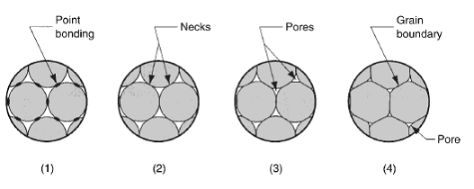 Sintering process, causing small particles to melt and coalesce
Source: MechScience
The ingredients are:
Precious Metal Powder (70-90%)
A variety of metal powders can be used such as gold, silver and copper, however these are imperceptible to the eye,
with particle size <200um.
Ethyl/Methyl Based Cellulose Binder with Water (0.8-8%)
The cellulose binder that holds the particles together, and allows for forming and moulding of them, whilst being
comprised of organic matter so that it can burn away cleanly. Ratios typically vary from 5:95 to 30:70 cellulose to water.
Alykly Benzene Sodium Sulphate (0.03-0.3%)
This chemical known as Polysoap, is used as a surface active agent, breaking down any solid substances that may form as a reaction
from the water and cellulose
Oil (0.03-3%)
Acting as a lubricant, the oil helps with the handability of the clay, and prevents adhesion to both packaging, and any moulds used in
the forming process.
The benefit of this process is that it's far easier to mould a clay like material due to the malleability of it compared to working
actual metal. This allows for the formation of complex geometries in clay through simply hand moulding it or even 3D printing, then processing it
into a metal object, that would otherwise have been too difficult to make. A common application would be to make jewellry by hand, and then fire it
in a small kiln or use a blow torch. It would also typically be hardened by passing through a tumblr, in order to improve scratch resistance if the
pieces were worn.
Whilst there are guidelines on how to fire the piece with information on temperature and times, one side effect from this process
is that as the metal particles sinter, the object experiences slight shrinkage. When trying to make intricate shapes and complex geometries,
this starts to have a big impact as finer details could be lost entirely. This phenomenom hasn't been fully understood, and so
the research project was focused on understanding the impacts of the balance between firing processes and the hardness/shrinkage of PMC.
There was also interest in understanding if the tumbling process actually benefited the material at all, and imparted a good level of hardness.
From discussing with users and representatives of the materials, there was a belief that some firing times/temperatures were not intensive enough to sinter the metals fully, which resulted in breakages in pieces, whilst the higher temperatures caused too much shrinkage.
I began to plan out the project, and decide the variables that would allow for the understanding of these conditions:
●The temperature (600, 700, 800 and 900 degrees celsius)
●The firing times (10, 45 and 90 minutes)
●The heating method (blow torch vs kiln)
●The post-processing (tumbling to harden the surface vs virgin)
Samples would have their dimensions and weight recored pre- and post-firing, in order to determine relative shrinkage.
The primary method of testing was the Vickers Hardness Test, the process of indenting a sample with a controlled force using an diamond tipped point,
and then measuring the width and height of the mark made. These dimensions could then be translated into the surface hardness of the material.
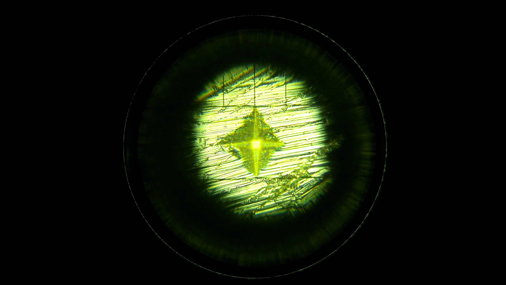 Indentation on the sample surface seen through a microscope
A set of 9 samples would be fired at each temperature and time combination (12 different firing processes). A third of the batch would undergoe tumbling for 2 hours, whilst
another third would be tumbled for 4 hours. Then The entire batch would be tested for their surface hardness.
A subset of samples would be fired using a blow torch under typical conditions, to understand how it can vary to a more uniform kiln firing.
Both these methods had their temperature recorded using a thermocouple to guage the typical temperature a torch goes to, and to ensure that the kiln's
monitor was reporting accurately.
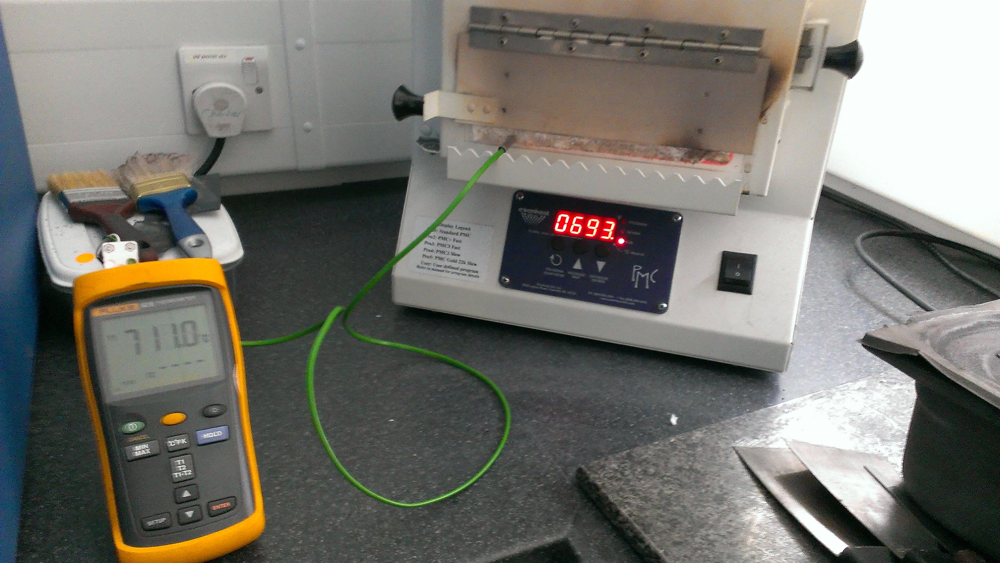
Monitoring the kiln temperature, showing an imbalance in the reading vs actual temperature
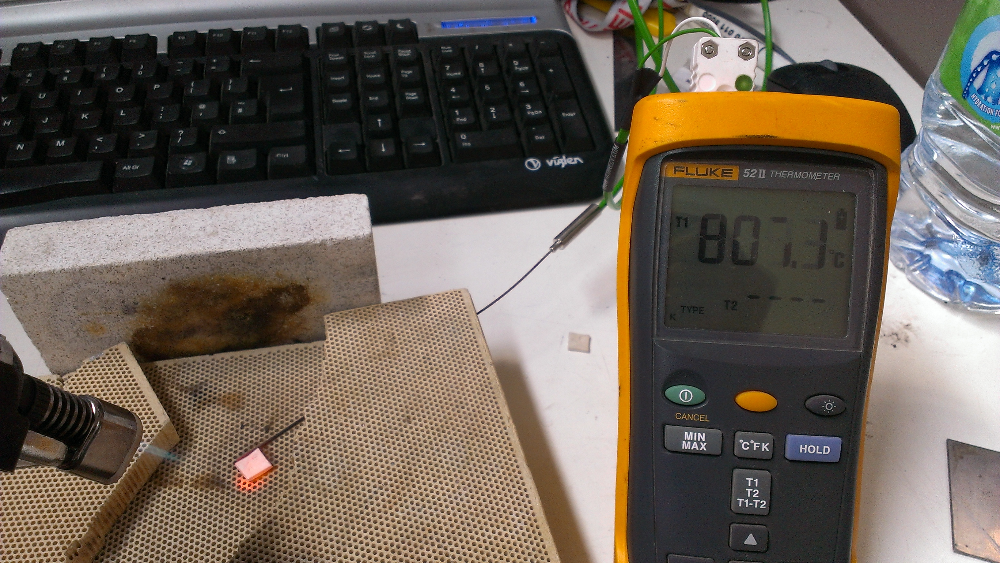
Checking firing temperature under a blowtorch
Scanning Electron Microscopy (SEM) would then be used to take microscopic images of the fire material, in order to visually confirm results and theories from the hardness
tests.
The most commonly sold product was the Sterling Silver PMC, a favourite to make jewelry out of, and so was selected as the material for the experiment from the range.
Small 10 x 10 x 3 mm sample squares were made, each with a set of markings on them to be able to identify which process they had undergone e.g. Sample 2 of the batch that
was fired under 700oc for 45 min and then hardened.
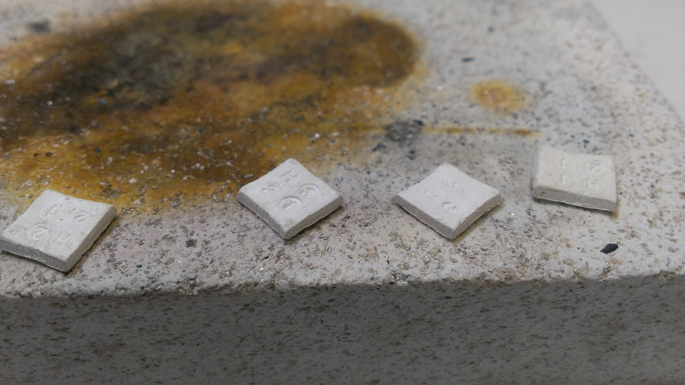 Various samples post firing, with their respective markings
Following the creation and testing of ~300 samples, with over 1500 datapoints, I could begin to analyse the data:
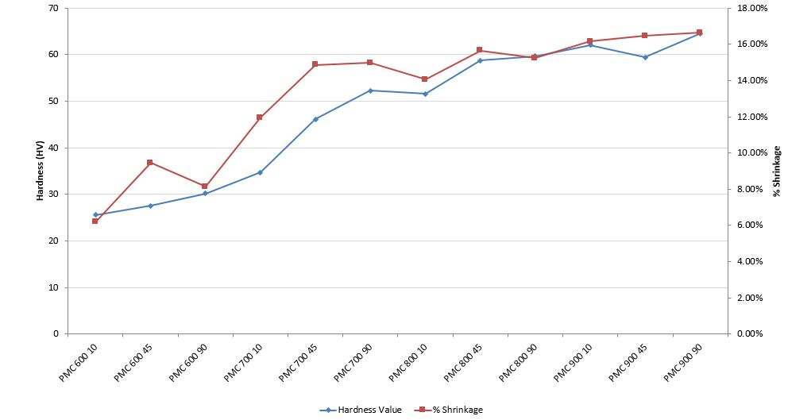 Comparison of Shrinkage and Hardness
The results fit with the hypothesis, that as you increase the intensity of firing, by increasing temperature primarily, and then firing times, there is an increase in the surface hardness, as well as the shrinkage. The principle that some firing times were simply not enough to sinter the material effectively was proven through the SEM scans, as shown below with a sample fired at 600oc for 10 minutes:
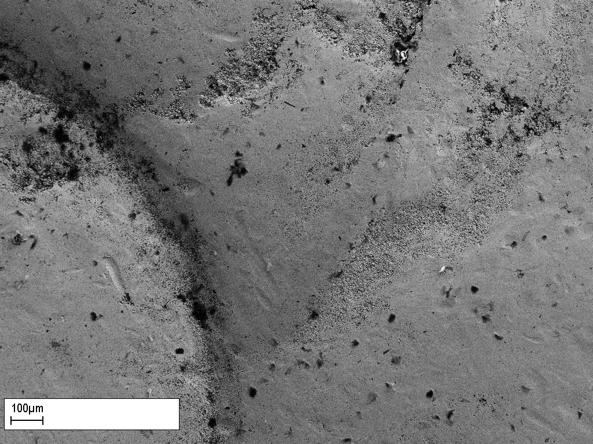 Surface Scan of Sample Fired at 600oc for 10 minutes (x200 magnifcation)
The surface scan shows a mostly sintered surface, however there are multiple areas across it that have some porosity still from the particles. These gaps can be clearly seen in the increased magnification below:
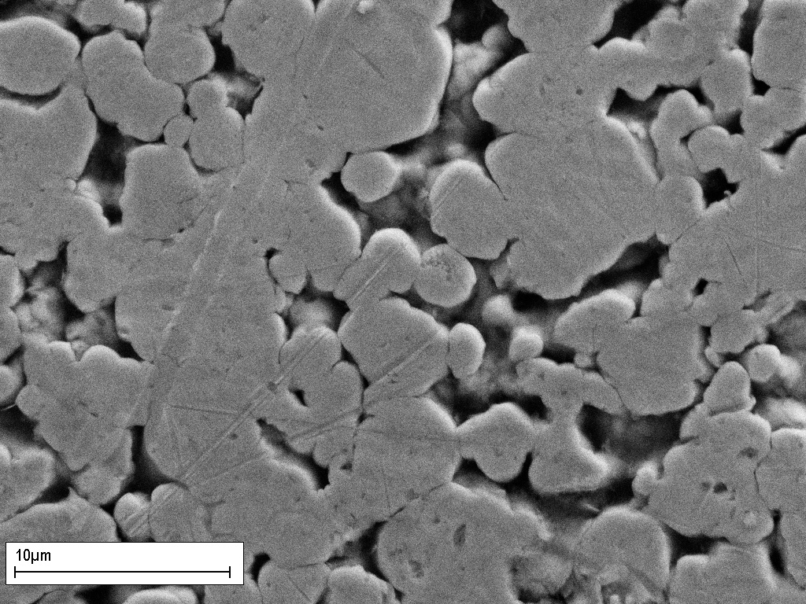 Surface Scan of Sample Fired at 600oc for 10 minutes (x10000 magnifcation)
On the other side of the spectrum, the increased times and temperature results in a much more homogeneous material, as shown below with a sample fired at 900oc for 90 minutes:
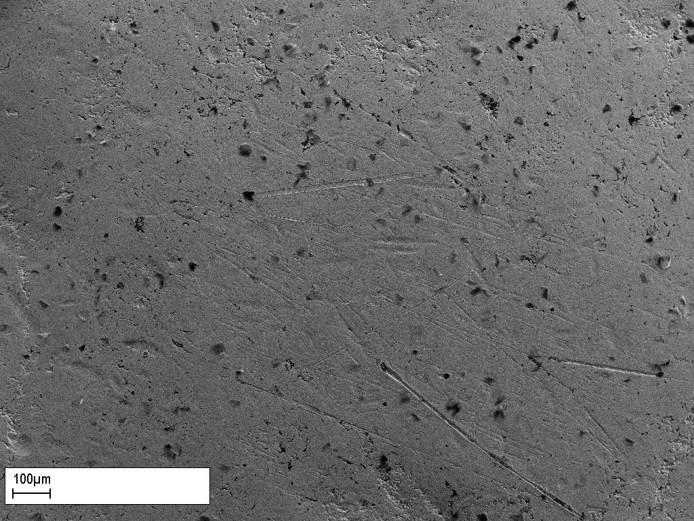
Surface Scan of Sample Fired at 900oc for 90 minutes (x200 magnifcation)
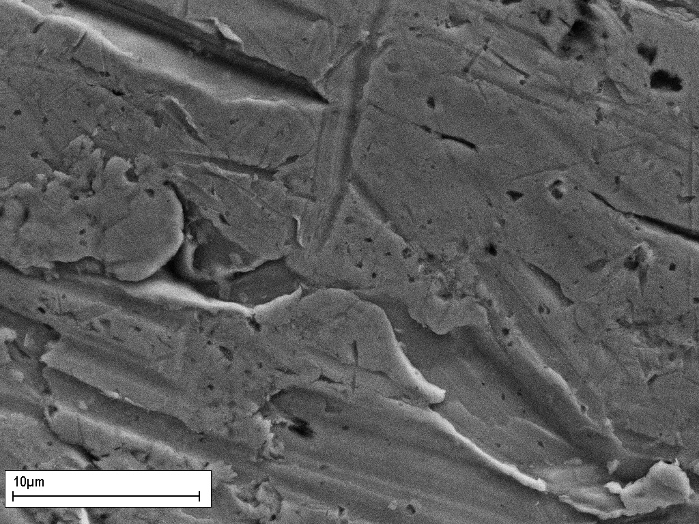
Surface Scan of Sample Fired at 900oc for 90 minutes (x10000 magnifcation)
When looking at the surface hardening through tumbling, interestingly there didn't seem to be much correlation, other than the gains from increasing the firing intensity:
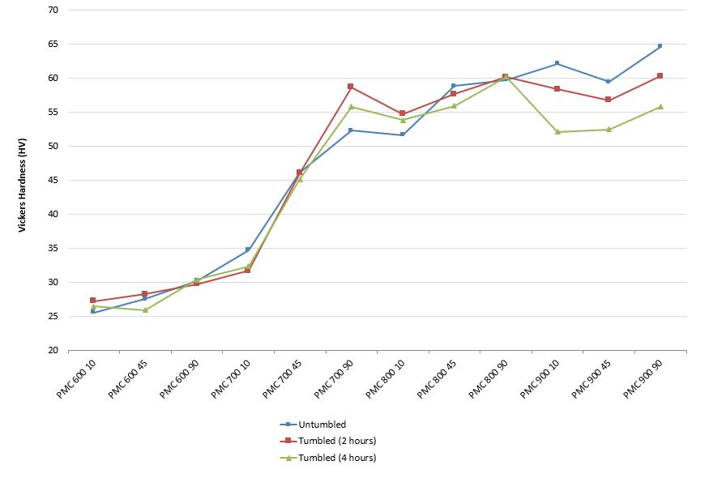 Vickers Hardness testing of unhardened, 2 hour tumbled and 4 hour tumbled across multiple firing programs
One of the potential reasons for this was that the hardened layer was too thin to have an effect to the hardness test i.e. the top layer may be hard, but as it is supported by malleable metal underneath, it deforms.
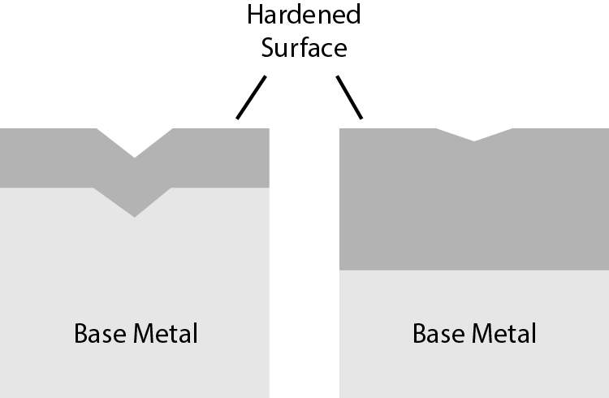
Further tests were carried out, to determine disparities in the flexural strength with different firing programs, and the data from
the blow torch firing was used to compare with typical kiln firings. To ensure quality of materials, XRF (X-ray fluorescence) Spectrometry was carried out
to analyse chemical contents in the samples and the starting clay.
All this data, as well as the previously discussed was past on as a report to Mitsubishi Materials, as well as a recommendation to firing procedures for optimum
hardness and strength, with minimal shrinkage.